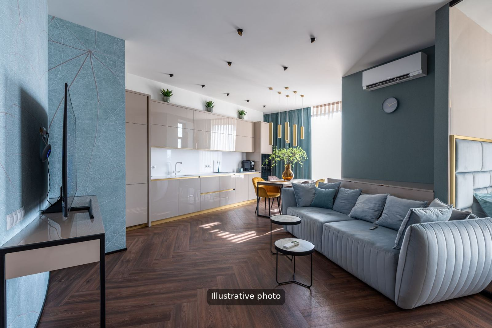
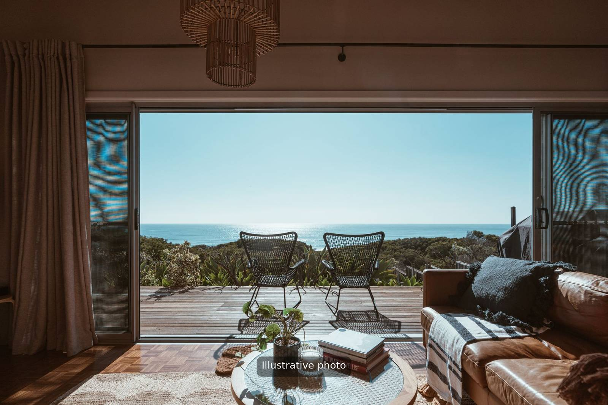

A comfortable base
An apartment gives you space, privacy and a kitchen. It suits couples, families and groups who want to explore Pula and the Istrian coast at their own pace, and it makes it easy to fit a boat excursion into the week.

New: luxury apartment in Fažana
A brand new luxury apartment in Fažana, only 700 metres from the sea. Fažana faces the Brijuni Islands and is a short drive from Pula. Ask us for photos, availability and the price for your dates.

What is usually included
- Free WiFi
- Free parking
- Air conditioning
- Fully equipped kitchen
- Dishwasher, washing machine and dryer
- Coffee maker
- Terrace or balcony in most apartments
Where to stay in Pula
The most popular areas are the historic city centre, Verudela, Stoja and the coast around them, where beaches, restaurants and sights are within minutes. Depending on the apartment, the nearest beach is a 5- to 15-minute drive, and many are close enough to cycle.